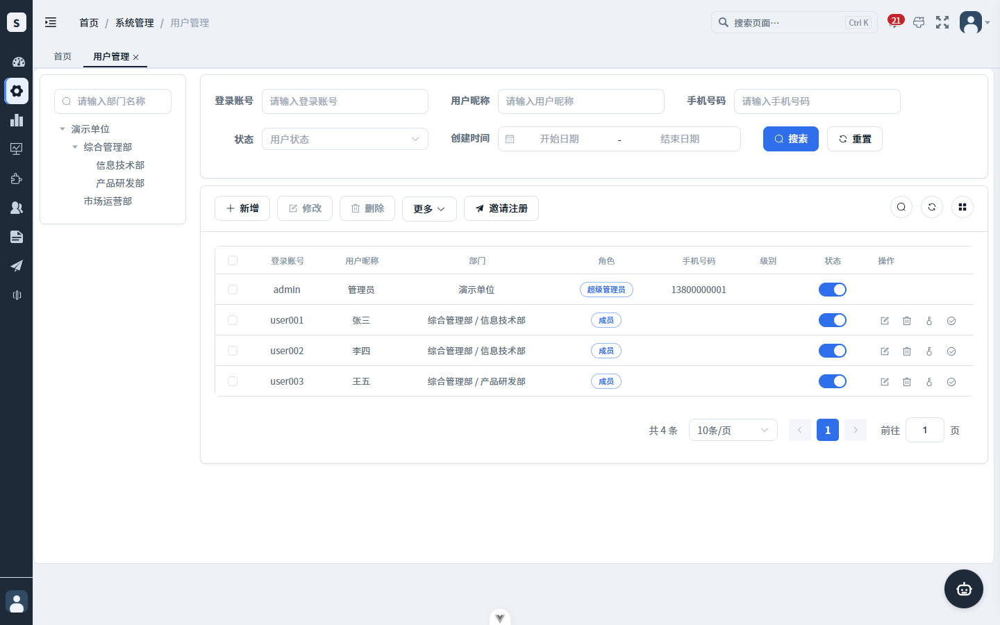
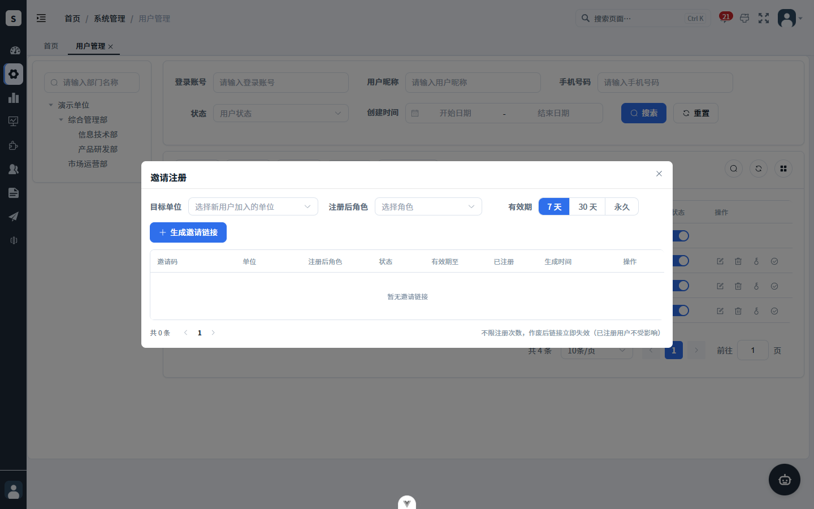
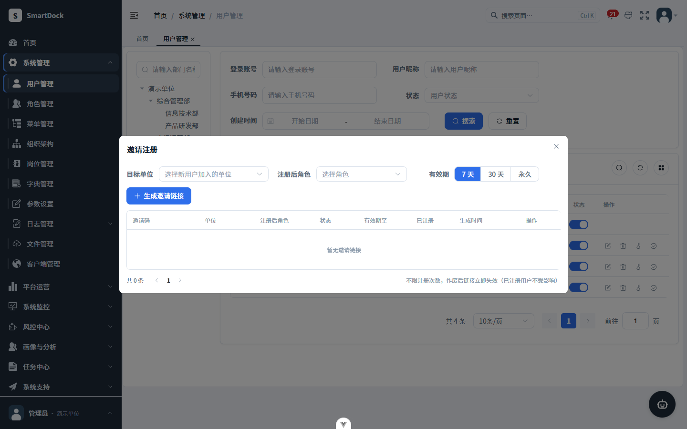
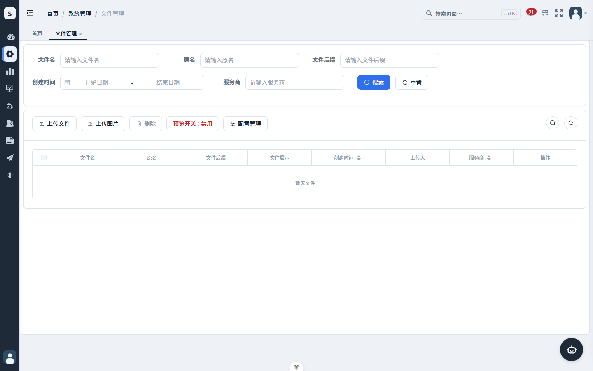
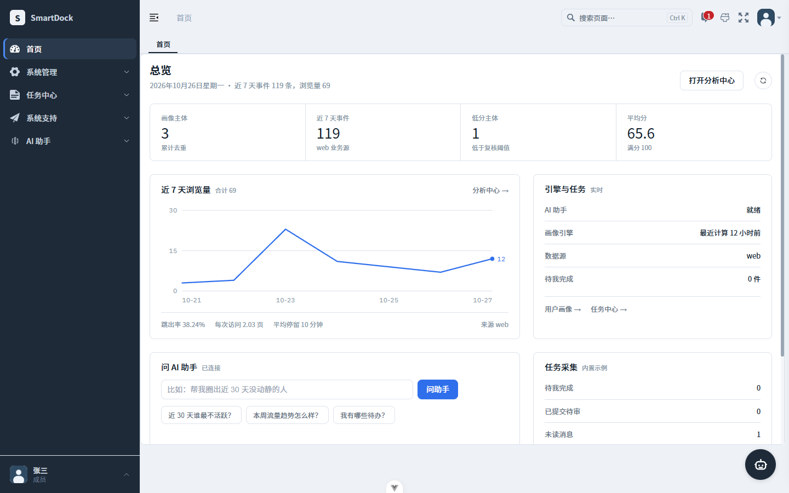
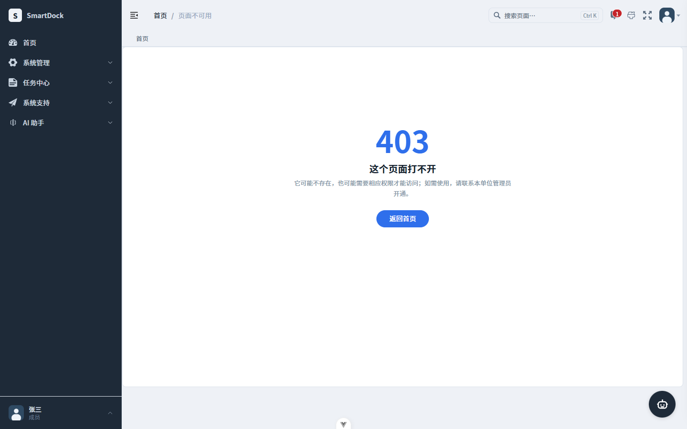
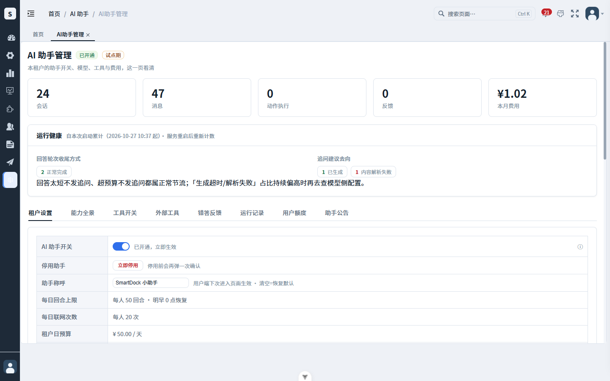
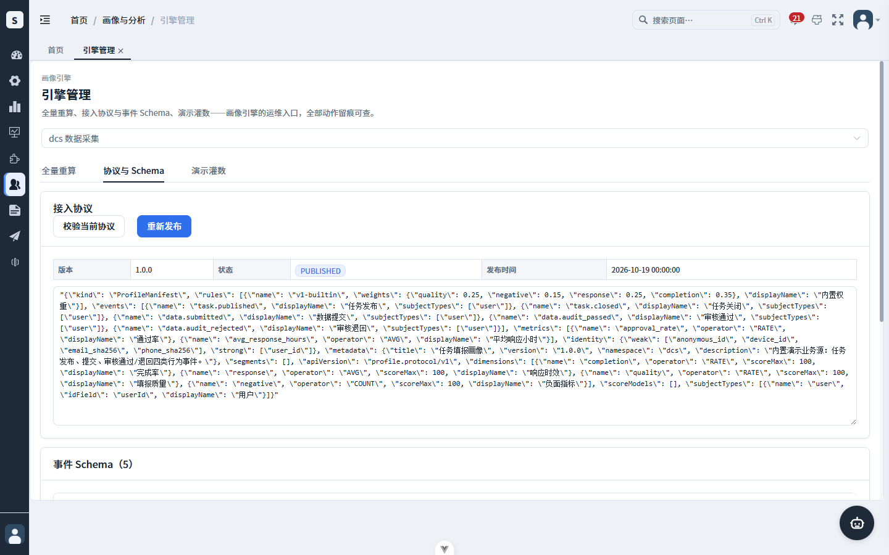
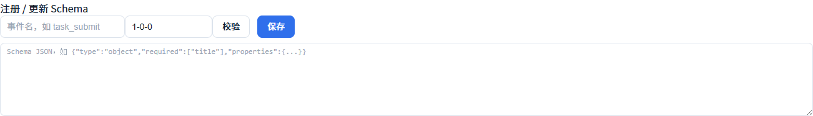
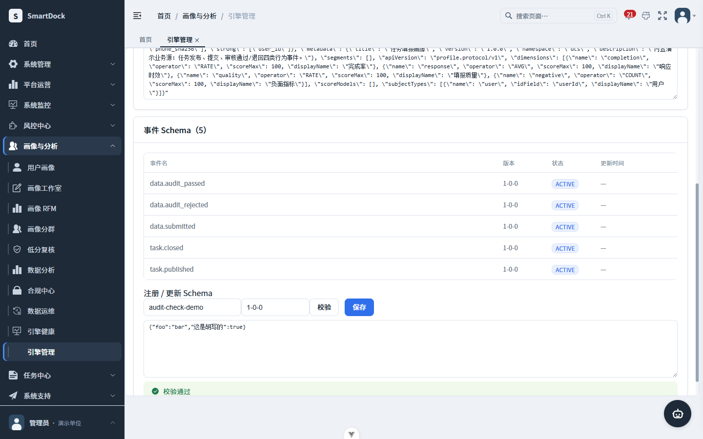

结论：没有「被遗忘没做的大功能」；要处理的是 4 个点了就坏的入口 和 15 处账本停更、承诺与实际不符。本板把需要你拍板的 8 题放上桌；修法已定、只等开工的不占题，列在第三节。
口径自检：82 = 业务 48 + 菜单权限 29 + 推翻 5；77 = 19 + 58；107 = 91 + 14 + 2。全表见报告第二节、第三节。
这四处是用户界面上看得见、点了却用不了或到不了的地方，也是本次审计最要紧的产出。逐条证据在报告第二节，本板第三节附真机截图流程。
| 问题 | 证据锚点 | 级别 | 归题 |
|---|---|---|---|
| 「邀请注册」整个功能是死的：后端四个接口（生成/列表/撤销/角色）整套不存在，角色下拉永远空的、列表永远「暂无」，生成永远被拦 | system/user/index.vue:100；api/system/inviteLink/index.ts:27-42；实测 GET /dcs/inviteLink/list 与 /roles 均返回 code:404「请求地址不存在」 | 点了就卡死 | 题1 |
| 文件管理「预览开关」按钮挂的权限串全系统没人持有：非超管永远看不到，而按钮实际调用的接口看的是另一个权限串 | system/oss/index.vue:55 ↔ SysConfigController.java:110 | 中危 | 题2 |
| AI 助手管理页没绑给任何常规角色：租户管理员进不去 | baseline/04_role_menu.sql 对 11925/11927 零匹配；活库仅一个雪花角色持有 | 中危 | 题3 |
| 演示库菜单落后于 SQL 权威口径：库缺 11972，11971 还挂着旧名字旧权限串 | 实查 smartdock_shots：缺 11972；SQL 新态在 02_reference.sql:581/582 | 中危 | 题3 |
这些在审计前就有归属和修法，审计只是再次坐实「还没做」。列出仅备忘，不占题。
| 事项 | 证据锚点 | 归属 |
|---|---|---|
| 401 页 375 真溢出（313px 插画撑破两栏） | 401.vue:16 仍为 313 未改 | 批四（修法已定） |
| 助手批二 + 批三待修 19 条（搜索空态文案、徽标圆角令牌、错误卡等） | 基线提交 6913e76 | 等开工，答案已锁定 |
| dcs 深改名（78 张表 + 69 个权限串 + 模块/包/目录） | 需协调助手窗口 | 批11B |
| 四段式权限串 11 个（风控 6 + 助手 4 + 菜单 11900） | 深改名时权限串整体归一，天然覆盖 | 随批11B |
| 空转按钮 9 个、孤儿视图 2 个（ai-doc-domain、tenant-wallet 死页） | 删除属业务动作，随深改名前专项清可少改一批文件 | 建议随批11B |
| 低危业务 33 条（各批留档池：PII 四条、批10 七项、backfill 宕机缺口等） | 报告第二节留档池 | 按原登记等触发 |
| 复核推翻的 5 条（22 题等回执、批9 清账、清空哨兵、CHAT 闸、登录页 V5） | 报告第二节末节已载提交锚点 | 直接销账 |
每题给出 2-3 个方案，按「首次见到的变化 / 日常使用 / 防呆 / 适合 / 代价」五个维度对比。涉前端的题附修复前后流程：修复前＝真机截图，修复后＝真机底图叠加模拟（红框/白补丁/黑标签均为板内标注，不是页面原生内容）。
按钮和弹窗都完整，但后端四个接口（生成/列表/撤销/角色）整套不存在。2026-10-27 活体实测的卡死路径：弹窗里「注册后角色」下拉永远是空的（取角色的接口 404）→ 表单填不完 →「生成邀请链接」永远被「请选择注册后角色」拦住；已有链接列表也永远「暂无邀请链接」（列表接口 404 被悄悄吞掉，用户只当是没数据）。 user/index.vue:100；api/system/inviteLink/index.ts:27-42；全后端仅 SysTenantLoginChecker.java:12 的注释提及该类名

就是这个按钮真机截图（超管登录）。在哪找：顶部菜单「系统管理 → 用户管理」，工具栏「更多」右侧的「邀请注册」。它看起来和其他按钮一样正常。

弹窗能打开，表单齐全，看着一切正常真机截图：目标单位 / 注册后角色 / 有效期（7 天·30 天·永久）/ 生成邀请链接，下方还有「已有链接」列表。直到这里，没人能看出问题。

角色下拉是空的；列表永远「暂无邀请链接」/dcs/inviteLink/roles → {"code":404,"msg":"请求地址不存在"}/dcs/inviteLink/list?pageNum=1&pageSize=10 → {"code":404,"msg":"请求地址不存在"}卡死闭环：角色拉不出来 → 表单填不完 → 生成永远被拦；报错被吞掉，用户只当「还没有邀请记录」。功能等于不存在，但界面上一直挂着。
同一张真机截图，在按钮原位叠加移除模拟（白色补丁为板内标注）：工具栏只剩真能用的功能，新增/修改/删除等点击路径零变化。
更新日志记一条「修复 · 移除不可用的邀请注册入口」，账上不再挂假功能。
真机底图叠加示意（未排期）：后端补齐生成/列表/撤销/角色四个接口并新建邀请记录表后，这个弹窗才是真的能用。
修复前＝真机截图（2026-10-27·5188 演示环境）；修复后＝真机底图叠加模拟，落地后换真机复拍。
| 维度 | 案A 整链摘除 | 案B 补齐后端 | 案C 隐藏不删 |
|---|---|---|---|
| 首次见到的变化 | 用户管理页少一个按钮，其余零变化 | 按钮变成真能用，可发邀请链接 | 按钮消失，代码保留 |
| 日常使用 | 不再有挂着却用不了的假功能 | 管理员多一条邀请进人通道 | 同案A |
| 防呆（坑还在吗） | 坑直接消失，账实一致 | 功能闭环 | 坑藏起来没消失，下轮审计还报 |
| 适合 | 开源通用版（当前无邀请制需求） | 确有多租户邀请场景的部署 | 拿不准要不要留的过渡 |
| 代价 | 约 0.5 天（前端+SQL+日志） | 约 2-3 天 + 安全审查（链接防滥用） | 约 0.1 天 |
| 风险 | 将来要做邀请制需重建（git 可找回） | 为没有用户的需求先付安全成本 | 尸代码长期滞留 |
项目定位是开源通用平台，邀请注册是内部系统遗留；界面上挂一个永远卡死的功能最伤信任，摘除是最小诚实改动。
风险与对冲：若未来客户点名要邀请制，按案B重做，git 历史里的旧实现可作参考。
按钮显示与否看的是权限串 system:oss:edit——全系统前后端都没有这个串，等于只有超管（万能权限）能看到；而按钮真正调用的保存接口看的是 system:config:edit。结果：有真实权限的管理员看不到开关，界面上「谁能看见」和「谁能用」对不上。 oss/index.vue:55 → api/system/config/index.ts:51 → SysConfigController.java:110

预览开关 : 禁用真机截图（超管登录）。在哪找：顶部菜单「系统管理 → 文件管理」，工具栏「删除」和「配置管理」之间。超管靠万能权限看得见，所以平时没人发现异常。
system:oss:edit → 前端 v-hasPermi / 后端注解 / 菜单 SQL 三处 0 命中（没有任何角色能拿到）；POST /system/config/updateByKey → 门禁是 system:config:edit（SysConfigController.java:110）。后果：哪怕管理员真有 config:edit（接口其实调得通），也永远看不到这个开关——看得见的人和能用的人不是同一批。
真机底图叠加模拟：前端一行把按钮的权限判断改成 system:config:edit（它实际调用的接口门禁），有该权限的管理员即可见可用——看得见＝用得了。
修复前＝真机截图（2026-10-27·5188 演示环境）；修复后＝真机底图叠加模拟，落地后换真机复拍。
| 维度 | 案A 前端一行对齐 | 案B 后端单开权限 | 案C 维持登记 |
|---|---|---|---|
| 首次见到的变化 | 有 config:edit 的管理员第一次看到开关 | 同案A | 无变化 |
| 日常使用 | 看得见就等于用得了 | 同案A | 非超管永远用不到 |
| 防呆 | 按钮可见性与真实权限一致 | 同案A，且权限粒度更细 | 账上永远挂一条「权限串孤儿」 |
| 适合 | 小步快修 | 要严格区分「改系统配置」与「改文件开关」的多角色租户 | 不在乎这条审计项 |
| 代价 | 约 10 分钟 + 双视角回归 | 约 1 天（后端接口 + 菜单 SQL 双写） | 0 |
| 风险 | config:edit 角色多显一个按钮（他们本就有权调用） | 为一个按钮引入新权限串，配置面变宽 | 下轮审计重复报 |
按钮该给谁看，就该跟它真正调用的接口权限一致；一行改动消除「界面说不行、接口说行」的错位。
风险与对冲：将来若要细分权限，届时按案B升级，此改动不冲突。
三件事：① AI 助手管理页（菜单 11925/11927）在出厂 SQL 里没绑给任何常规角色，租户管理员进不去（批四已定修法＝补授权）；② 演示库的菜单 11971/11972 落后于 SQL 新口径；③ 前端路由文件里一段注释指向不存在的 SQL 文件，误导后人。 04_role_menu.sql 对 11925/11927 零匹配；实查 smartdock_shots 缺 11972；router/index.ts:178-179

普通成员（user001 真机）：顶部「AI 助手」组下只有 会话/记忆，没有「AI助手管理」真机截图（user001 登录）。入口在哪：顶部菜单「AI 助手」组——超管这里会多一项「AI助手管理」，成员没有。

手输 /ai/assistant-admin → 403 页面不可用（真机）真机截图：成员即使知道地址直连，也是「页面不可用」——权限确实没授，死路一条。

AI 助手 → AI助手管理（超管可见）真机截图（超管）：同一入口、同一页面，功能是好的——问题只在出厂角色没绑 11925/11927（baseline/04_role_menu.sql 零匹配，活库仅一个雪花角色持有）。
baseline + migration 双写补授后，租户管理员顶部出现「AI助手管理」并进入此页。同一小批顺带：演示库 11971/11972 对齐 SQL 新口径 + 删 router:178 陈旧注释。
修复前＝真机截图（2026-10-27·5188 演示环境·user001 与 admin 双视角）；修复后＝真机底图叠加模拟，落地后换真机复拍。
| 维度 | 案A 先行止血小批 | 案B 并入批四 | 案C 推到批11B |
|---|---|---|---|
| 首次见到的变化 | 租户管理员立刻能进管理页 | 批四开工后才能进 | 最晚（深改名批） |
| 日常使用 | 菜单与库账一致，审计中危先消两条 | 同案A，只是晚几天 | 同案A，更晚 |
| 防呆 | 错误注释拔掉，不再误导后人 | 同案A | 陈旧注释多留一阵 |
| 适合 | 当前「等开工」空档，SQL/注释级低风险 | 不想打断排程 | 只想一次动完权限串 |
| 代价 | 约半天 + 双视角活体验收 | 0 额外（原计划内） | 0 额外 |
| 风险 | 与批四清单小幅交叉，需回刷批四计划 | 死入口多存活数周 | 止血最晚，审计项挂账最久 |
三件都是 SQL 与注释级低风险改动，不值得让「租户管理员死路」再等排程；批四修法本就已定，先做等于提前兑现。
风险与对冲：批四计划里同步划掉「P1-1 补授权」一项，防止重复施工。
四本账停更：phase2 总账批12行还写「待拍板」（实际已拍已建）；UI 总账 §0.3 停在 10-24；缺口底账两题仍标待拍（22 题 10-26 已全锁定）；能力②总账「下批」行过期。另有一处危险错误前提：批11B 施工计划写着「协议/Schema UI 从未建页」——与代码相反，照它去改 AGENTS.md 对照表会删错行。 phase2-master-plan.md:18/:52；batch11b-12-plan.md:36；admin.vue:52-126（UI 已建于 025ea12）
| 维度 | 案A 文档专批一次回刷 | 案B 只修最危险一处 | 案C 登记不动 |
|---|---|---|---|
| 首次见到的变化 | 八处账目翻开即现状 | 只改「UI从未建页」那行 | 无 |
| 日常使用 | 后续会话不再按旧账误判 | 删错行的风险解除 | 误判风险留存 |
| 防呆 | 错误前提全数拔掉 | 部分 | 无 |
| 适合 | 多窗口并行纪律 | 时间紧 | 不在乎账实 |
| 代价 | 约 1-2 小时（.workshop 内文件，不进 git） | 约 10 分钟 | 0 |
| 风险 | 无代码风险 | 其余账继续误导别的窗口 | 账实不符持续累积 |
便宜、零代码风险，且「按错账施工」已经真实发生过一次（错误前提会让人删掉不该删的对照表行）。
风险与对冲：无；顺带补上批9/批10 收官行的真实提交号。
二期总账两处承诺「CSV 导出接审批流」，批11 收官行被悄悄改写成只做了「导出审计」；代码里确实没有任何审批流实现。属于「承诺了没做、账还改了口」。 phase2-master-plan.md:89/:107 对照 :17；全后端 grep「审批」仅两处注释命中
| 维度 | 案A 账对齐现实 | 案B 现在补实现 | 案C 含糊维持 |
|---|---|---|---|
| 首次见到的变化 | 总账如实标注「审批流未实施，已交付审计」 | 导出前多一步审批 | 无 |
| 日常使用 | 读账的人不再被误导 | 导出要走申请→审批→放行 | 同现状 |
| 防呆 | 承诺与实际重新对齐 | 功能补齐 | 账实不符挂账 |
| 适合 | 当前无审批需求 | 确有合规要求的客户场景 | —— |
| 代价 | 约 20 分钟 + 登记进待办池 | 约 3-5 天（新表+状态机+页面） | 0 |
| 风险 | 承认缺口（本来就没做） | 无人用的流程变维护负担 | 下轮审计再报 |
功能没做不丢人，账改口才丢人；先把账写诚实，等真出现审批需求再按案B立项。
风险与对冲：若你其实想要审批流，直接选案B并告知优先级。
① 36 个本地提交未推送（含多个窗口的工作，origin 停在 10-25）；② 悬挂分支：docs/readme-slim（落后 106 个提交，精简思路已被主干两轮 README 深度优化取代）与本地 pr-1/pr-1-merge；③ 早期计划「删 .git 重置成单提交」从未执行也没撤销，与已开源的现状矛盾。 git log origin/master..master；merge-base 实证 readme-slim 未合并；batch-7.md:25
| 维度 | 案A 清扫 + 正式作废 | 案B 留 readme-slim 待评估 | 案C 执行历史重置 |
|---|---|---|---|
| 首次见到的变化 | 分支列表干净，36 提交上远端 | 推送 + 删 pr-1 系列，readme-slim 留着 | 整仓变单提交 |
| 日常使用 | 跨窗口不再攒推送债 | 同案A，另留一条待办 | 历史不可追溯 |
| 防呆 | 矛盾计划正式销账 | 矛盾部分销账 | 与远端全量历史冲突 |
| 适合 | 开源主干的现状 | 仍想保留精简版 README 的可能 | —— |
| 代价 | 推送由你或跨窗协调；删分支约 5 分钟 | 同左 + 后续 rebase 评估 | 强推覆盖开源仓 |
| 风险 | readme-slim 有独有内容则丢（审计已核：内容已被取代） | 两套 README 口径并存 | 不可取：远端已有全量历史 |
「历史重置」与已推送的开源仓事实冲突，该正式作废；readme-slim 的使命已被主干深度优化完成，留着只会造成双口径。
风险与对冲：删除前先 git show 抽查 readme-slim 独有内容（审计已做过一轮，均已被取代）。
2026-10-27 活体实测口径（比审计原文更精确）：空着或不是合法 JSON，前端会拦（提示「Schema JSON 不合法」「请先填事件名」）；但只要是一段合法 JSON——哪怕是 {"foo":"bar"} 这种胡写内容——后端一律返回 valid:true，页面亮出绿色「校验通过」。schema 本体根本没进校验：后端只收 props/context/traits 三个字段。
admin.vue:117（前端把 schema 发了过去）；ProfileSchemaController.java:53-56（后端没收它）

真机截图（超管登录）。在哪找：顶部菜单「画像与分析 → 引擎管理」→「协议与 Schema」页签。上半部分是接入协议（含「校验当前协议」，那个是真的验协议）。

真机特写：页面下方的「注册 / 更新 Schema」区——事件名、版本、「校验」「保存」按钮和 Schema JSON 大输入框。出问题的就是这个区的「校验」。

填的是胡写内容，却亮「校验通过」{"foo":"bar","这是胡写的":true} → 点「校验」/profile/schema/dcs/validate 返回 {"valid":true,"errors":[]}这不是「没填样本」的问题（空 JSON 有前端护栏），而是校验根本没把 schema 当校验对象：填什么合法 JSON 都绿灯。
真机底图叠加模拟：止血＝让校验真的验 schema 本体（前端本地校验或后端把 schema 字段纳入，约半天），假绿灯当天消失；完整的样本输入重设计仍按留档归批11B。
修复前＝真机截图与真机操作（2026-10-27·5188 演示环境，假绿灯为实拍非模拟）；修复后＝真机底图叠加模拟，落地后换真机复拍。
| 维度 | 案A 校验真验 Schema 本体 | 案B 完整样本输入重设计 | 案C 只改文案 |
|---|---|---|---|
| 首次见到的变化 | 胡写内容被拦，报真实错误原因 | 多出样本录入界面 | 按钮字样变化 |
| 日常使用 | 绿灯重新可信 | 真正校验 schema+样本 | 仍可能绿灯说谎 |
| 防呆 | 假绿灯立刻消失 | 功能闭环 | 坑仍在 |
| 适合 | 等批11B 空档的过渡 | 急用 schema 校验的场景 | —— |
| 代价 | 约 0.5 天（前端本地或后端纳入 schema 字段） | 约 2-3 天（前端输入 + 后端校验） | 约 5 分钟 |
| 风险 | 完整版仍欠着（已登记批11B） | 与批11B 深改名窗口撞车 | 说谎按钮换个说法继续说谎 |
按钮当前只验「是不是合法 JSON」；止血让它验「是不是合法 Schema」，半天成本让绿色「校验通过」重新值钱。
风险与对冲：止血版要在更新日志写明「完整样本校验仍在路上」，避免被当成已修完。
审计 19 条中危里，入口类（题1/2/3/7）都可立刻修；其余大多已有归属（批四、批11B、文档批）。既定总控序是：壳层波一 → 助手批二/批三 → B 批 → 批四 → 批11B → 批12。 20261026-execution-master-plan.md 施工序
| 维度 | 案A 止血批→回原排程 | 案B 全并入批四 | 案C 审计专批清 19 条 |
|---|---|---|---|
| 首次见到的变化 | 1-2 天内四个入口全部可用/移除 | 死入口再存活数周 | 中危一次清零 |
| 日常使用 | 其余工作零打扰 | 排程最稳 | 排程大改 |
| 防呆 | 账实不符同步修（题4/5 文档批顺路） | 账继续旧着 | 全修但深改名类本就该等批11B |
| 适合 | 「先止血后照旧」的节奏 | 完全不想加批 | 强迫症式一次清账 |
| 代价 | 止血批约 1-2 天 | 0 额外 | 约 1 周，打乱既定序 |
| 风险 | 批四清单要划掉一项（题3已先行） | 用户继续踩坑 | 与助手窗口协调面变大 |
止血批 = 题1A + 题2A + 题3A + 题7A + 题4/题5 文档回刷，1-2 天一个独立提交收口；然后按既定总控序继续，互不干扰。
风险与对冲：止血批收口时回刷批四计划与更新日志，划掉已先行项。
| 题 | 推荐 | 一句话 |
|---|---|---|
| 题1 邀请注册 | 案A 摘除 | 删整条永远卡死的假功能链，更新日志记一条修复 |
| 题2 预览开关 | 案A 一行对齐 | 按钮可见性对齐它真实调用的接口权限 |
| 题3 菜单账 | 案A 先行止血 | 补授 11925/11927 + 演示库对齐 + 删陈旧注释 |
| 题4 停更账本 | 案A 一次回刷 | 八处文档账全改齐，拔掉错误前提 |
| 题5 审批流 | 案A 账对齐现实 | 如实标注未实施，登记待办池 |
| 题6 仓库卫生 | 案A 清扫+作废 | 协调推送 36 提交、删悬挂分支、作废历史重置 |
| 题7 校验按钮 | 案A 真验 Schema | 让校验把 schema 本体当校验对象，假绿灯消失 |
| 题8 顺序 | 案A 止血批 | 1-2 天收口止血批，然后回既定总控序 |
说明：八题推荐均为各自最省的诚实解，彼此独立、可混搭（例如题1 选案B 补后端，其余照推荐）；混搭直接在对话里说明即可。止血批（题8A）天然打包题1A/2A/3A/7A 与题4/5 文档。